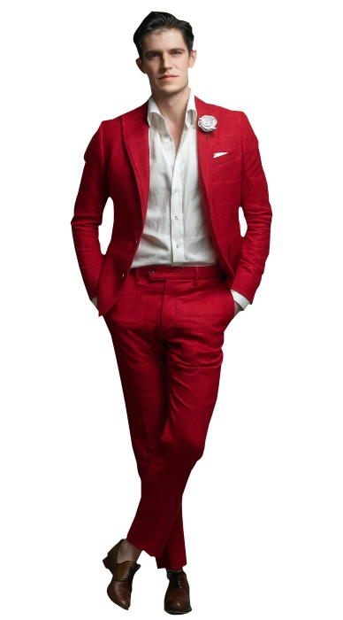
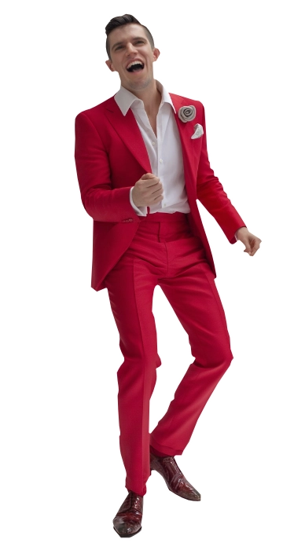

Alejo Covarrubias
Alejo Covarrubias
The Siren
Ricardo Alejandro "Alejo" Covarrubias, a captivating vampire of striking allure, was once a virtuoso pianist in the realms of the living. His symphonic melodies not only enchanted hearts but caught the attention of an immortal lover who, on a whimsical impulse, bestowed upon him the gift of eternal life.
Ricardo's hauntingly beautiful compositions now possess a supernatural power – his music, a mesmerizing elixir, has the ability to sway the course of battles, inducing ecstasy or madness in those who listen. Despite being immersed in an unending conflict, Ricardo harbors a fervent desire for peace, crafting a harmonious existence amid the discord of his immortal journey. ❧
Plot Hooks.
Music. Same as Adan, he is interested in music. However, while Adan reigns the days, Alejo casts his power over the night. Lorewise, Alejo is a Son of Cacophony, a secret special bloodline within the vampiric world that can lure, support, enthrall and drive to maddness anyone who listens to them.Signature Motif.
Singing. His voice is unique and so sweet that will melt your heart when you hear it. He would love to perform for your muse!.Perfect for...
Classic romantic threads. If you are looking for a sweet and loving romantic vampire that will give you the full Anne Rice experience (from love bombing to the manipulation and back to the love bombing) this is your guy. He may like it vanilla, but trust me, once you get to taste him you'll see he's anything but that...Goal
Honesty.
Having worked with the Sabbat in the past, mostly pushed by his own pragmatical Sire, he understood that honesty is probably the only thing that can stop the Eternal Struggle that vampires face. He can see that it's their existence that creates the problem, yet he clings desperately to the idea that he can change the world.obstacle
His Bloodline.
However, he's a big liar. For some unknown reasons, perhaps because of the Vaulderie ritual he went through when a young Shovelhead or perhaps because his own Sire used strange and lost magics, he poses as a Toreador, but in all reality he's part of a long lost bloodline.«Entrégate. Sin Condiciones.»
Personal Data

Ricardo Alejandro Covarrubias
Full Name
28
Apparent age
09/Dec/1940
DOB
Camarilla
Sect
Light brown
Hair
Blue
Eye color
Toreador
clan
White
Ethnicity
Spanish
Nationality
Neonate
Rank
1.75m
Height
80 kg
Weight
Spanish, English and French
Languages
Male
Gender
Homosexual
Preference
Singer
Profession
Top
Position
7" / 5"
length / Girth
Miguel Bernardeau
Faceclaim
82
Real Age
ENTP
MBTI
Character sheet
Attributes
Distinctions
skills
Predator
Siren

Nature
Rogue
Demeanor
Artist

Creative
Expressive
Visionary
Inspirational
Intuitive
Eccentric
Self-absorbed
Unpredictable
Moodiness
Detached
Expressive
Visionary
Inspirational
Intuitive
Eccentric
Self-absorbed
Unpredictable
Moodiness
Detached
Charismatic
Independent
Stylish
Confident
Adventurous
Rebellious
Defiant
Dismissive
Different
Irresponsible
Independent
Stylish
Confident
Adventurous
Rebellious
Defiant
Dismissive
Different
Irresponsible
Strength

Dexterity
Stamina
Charisma

Manipulation
Composure
Intelligence
Wits
Resolve
Potency
🙪
Specialties
Seduction
Singing
Motivation
Improvisation
Persuasion
Performance
Insight
Awareness
Occult
Empathy
Intimidation
Politics
Subterfuge
Athletism
Investigation
Firearms
Etiquette
Drive
Technology
Other skills

The Blood
Gifts
Vampiric Mending
Can heal all the damage in a scene. Wounds close and limbs reattach (if they haven't been lost for more than one hour).
Blood Surge
Can add a D6 to any attribute so long he's willing to loose blood in the process.
Blush of Life
Dramatic. When required, Alejo can mimic the bodily functions of a human: warmth, breathing, even bowel movement. Pretending to eat food is also possible.
Curse
Bane: Empathy
Cannot feed from unwilling and unconsenting humans
Compulsion: Obsession
When hitching Discipline rolls, Alejo feels compelled to find a small detail in the surrounding area and get lost into it, ready to observe it. It will normally be sounds or voices.
Resonance: Choleric
Dramatic. Normally he will choose passionate and full of conviction individuals to taste their blood. Angry and violent individuals are also on the menu, but he prefers to not indulge with them.
Disciplines

Auspex
Detection
Heightened SensesAlejo can extend his senses within the vicinity he's in to focus on conversations, notice small details or detect aromas normally hidden. Add one D6 to Awareness rolls when used.
PremonitionAlejo can get prophetic visions, not always accurate and sometimes symbolic of things to come. It does not allow him to see the future, but to prepare him for what's to come in puzzling ways. Dramatic.

Celerity
Movement
Rapid Reflexes / FleetnessAlejo can move quite quickly to avoid damage or to throw objects as well as to deflect. It allows him to recharge weapons or draw a bow dramatically fast. It does not allow him to cause damage. Add one D6 to Athletics rolls when used.

Presence
Influence
Awe / DauntAlejo can draw the attention / repel others in enigmatic and supernatural ways. Add one D6 to Persuasion, Subterfuge, Leadership, Etiquette or Intimidation rolls.
MelpomeneNormally, the victim of Presence would require to see the vampire, but Alejo's bloodline allows him to use the gifts of Presence via his voice.
Backgrounds



Signature Assets
Loresheets: Stories of the Daughters
Unbeknowst causes had made Alejo part of a very special bloodline called "Daughters of Cacophonie" who are able to use their voice to enrapture and seduce others. This is a secret he's kept from others who believe the Daughers are just a myth.
Looks: Stunning
Alejo is a beautiful man whose looks can stop a cart in the midst of a road. Add a D6 to any social rolls where he can take advantage of his beauty.
Retainer
Manolo Castillo is one of the descendants of the Covarrubias family. It's probably the only individual who knows of Alejo's real actions and he has been the public name of all the entrepreneur ventures that Alejo has taken.
Other Assets
Mawla
Alejo has an older vampire as a mentor who, at times, engages in sex with him. Their relationship is romantic at the same time that is protective. Players are encouraged to take this role if they wish.
Herd
A group of characters called all "The Rose Thorns", as they are all humans who believe to be in a policule with Alejo at the center. The reality is that Alejo has sex with them and takes advantage of the situation to feed.
Haven: Carmen
His Sire had a lot of money and tons of clubs, one of them being Carmen. Located at the heart of the city, it's the place where Alejo sings, plays and conducts all of his vampire activities.